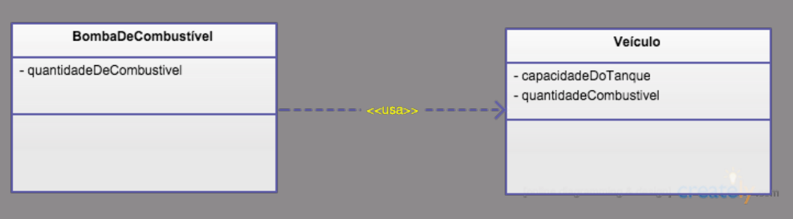
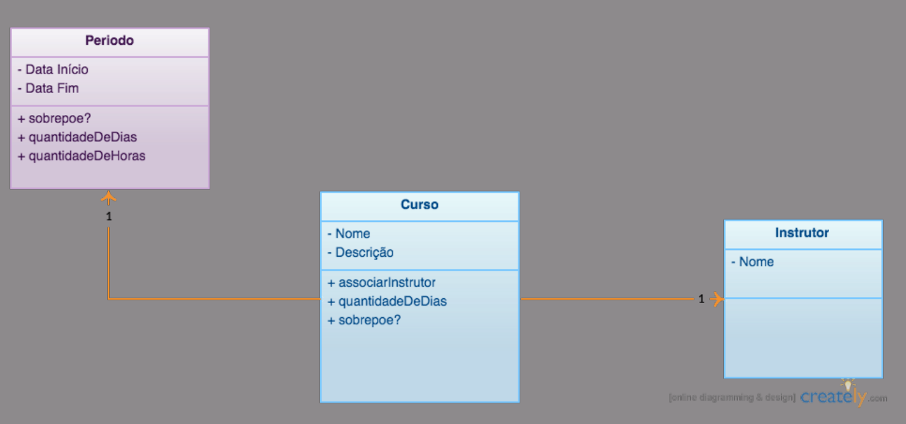

PythonSudeste 2016
Orientação a Objetos em Python
Bernardo Fontes
Belo Horizonte/MG
03 de Setembro de 2016
Object-oriented programming
Object-oriented programming
## O que **são** objetos?
### ...objects that have **an identity**
*[Steve Freeman and Nat Pryce](http://www.growing-object-oriented-software.com/)*
### ...objects that have an identity, might **change state** over time
*[Steve Freeman and Nat Pryce](http://www.growing-object-oriented-software.com/)*
### ...objects that have an identity, might change state over time and **model computational processes**
*[Steve Freeman and Nat Pryce](http://www.growing-object-oriented-software.com/)*
## OO é sobre **objetos**
- Classes, funções ou outros procedimentos são **estratégias de implementar OO**
Mas segundo Alan Kay é sobre **mensagens**
Just a gentle reminder that I took some pains at the last OOPSLA to try **to remind everyone that Smalltalk is not only NOT its syntax or the class library, it is not even about classes**. I'm sorry that I long ago coined the term "objects" for this topic because it gets many people to focus on the lesser idea. **The big idea is "messaging"**
*[Alan Kay](http://c2.com/cgi/wiki?AlanKayOnMessaging)*
## **Dados** + **Comportamento**
## **3 elementos**
- ### Mensagens
- ### Tipo
- ### Estado
## Mensagens
- ### Maneira de os objetos se comunicarem
## Algum problema?
```python
class AddUserToGroupUseCase(object):
def execute(self, *args, **kwargs):
# some code
group = Group()
group.name = 'Admin'
group.users = ['Berin', 'Duko', 'Geo']
# more code
```
```python
class AddUserToGroupUseCase(object):
def execute(self, *args, **kwargs):
group = Group()
group.name = 'Admin'
group.users = ['Berin', 'Duko', 'Geo'] # <-- muitas coisas aqui
```
OOP to me means only **messaging**, **local retention** and **protection and hiding of state-process**, and extreme late-binding of all things.
*[Alan Kay](http://userpage.fu-berlin.de/~ram/pub/pub_jf47ht81Ht/doc_kay_oop_en)*
OOP to me means only messaging, local retention and protection and hiding of state-process, and extreme late-binding of all things. **It can be done in Smalltalk and in LISP. There are possibly other systems in which this is possible, but I'm not aware of them.**
*[Alan Kay](http://userpage.fu-berlin.de/~ram/pub/pub_jf47ht81Ht/doc_kay_oop_en)*
One powerful design strategy, which is particularly appropriate to the construction of programs for modeling physical systems, is to base the structure of our programs on the structure of the system being modeled. **For each object in the system, we construct a corresponding computational object. For each system action, we define a symbolic operation in our computational model.**
*[SICP - Modularity, Objects, and State](https://mitpress.mit.edu/sicp/full-text/book/book-Z-H-19.html#%_chap_3)*
One powerful design strategy, which is particularly appropriate to the construction of programs for modeling physical systems, is to base the structure of our programs on the structure of the system being modeled. For each object in the system, we construct a corresponding computational object. For each system action, we define a symbolic operation in our computational model. **Our hope in using this strategy is that extending the model to accommodate new objects or new actions will require no strategic changes to the program, only the addition of the new symbolic analogs of those objects or actions.**
*[SICP - Modularity, Objects, and State](https://mitpress.mit.edu/sicp/full-text/book/book-Z-H-19.html#%_chap_3)*
One powerful design strategy, which is particularly appropriate to the construction of programs for modeling physical systems, is to base the structure of our programs on the structure of the system being modeled. For each object in the system, we construct a corresponding computational object. For each system action, we define a symbolic operation in our computational model. Our hope in using this strategy is that extending the model to accommodate new objects or new actions will require no strategic changes to the program, only the addition of the new symbolic analogs of those objects or actions. **If we have been successful in our system organization, then to add a new feature or debug an old one we will have to work on only a localized part of the system.**
*[SICP - Modularity, Objects, and State](https://mitpress.mit.edu/sicp/full-text/book/book-Z-H-19.html#%_chap_3)*
## Trocando Mensagens
```python
class AddUserToGroup(object):
def execute(self, *args, **kwargs):
# some code
group = Group('Admin')
group.add_user('Berin')
group.add_user('Duko')
group.add_user('Geo') # **envia** a mensagem
# more code
```
- ### Semanticamente **enviar uma mensagem** é MUITO diferente do que **chamar um método**
- ### Semanticamente **enviar uma mensagem** é MUITO diferente do que **chamar um método**
- ### **Mentalidade passiva** VS **metalidade ativa**
## Tipo
...a type a is collection of objects characterized by **functions, axioms and preconditions**.
*[Bertrand Meyer](https://archive.eiffel.com/doc/oosc/)*
## Estado
The state of an object encompasses all of the (usually static) properties of the object plus the current (usually dynamic) values of each of these properties...
*[Grady. Booch](https://www.amazon.com/Object-Oriented-Analysis-Design-Applications-3rd/dp/020189551X)*
### Simplificando
O estado de um objeto é a configuração dos **valores de seus atributos e relacionamentos** em um **dado momento do tempo**.
Eu e Luiz Costa
As duas outras contas são iguais?
### Requisitos
- Como um gerente de banco, gostaria de que fosse possível **abrir uma conta** e permitir **definir um saldo inicial**.
- Como caixa operador, gostaria que fosse possível **sacar e depositar** dinheiro na conta de um cliente.
## Possível solução
```python
class BankAccount(object):
def __init__(self, balance):
self.balance = balance
def withdraw(self, amount):
self.balance -= amount
def deposit(self, amount):
self.balance += amount
```
### Requisitos
- Como um gerente de banco, gostaria de que fosse possível abrir uma conta e permitir definir um saldo inicial.
- Como caixa operador, gostaria que fosse possível sacar e depositar dinheiro na conta de um cliente.
- **IH! Mas esqueci de avisar, ao sacar uma quantia, o cliente deve ter saldo suficiente na conta!**
### **Estado Válido** VS **Estado Inválido**
- Faz sentido uma conta sem número?
- Faz sentido uma conta sem agência?
## Um objeto deve nascer em um **estado válido** e **pronto para uso**!
## O que é um **estado válido**?
- O **domínio** onde o objeto está inserido define a **semântica dos seus estados**
## No nosso exemplo
- Conta e agência **são obrigatórias**
- Saldo inicial a **partir de R$ 1000**
- O cliente necessita ter **saldo suficiente** para realizar o saque
## **Inicializando** VS **Construindo**
```python
class BankAccount(object):
def __init__(self, account, agency, balance):
requirements = [account, agency, balance >= 1000]
if not all(requirements):
raise InvalidBankAccountException
self.account = account
self.agency = agency
self.balance = balance
def withdraw(self, amount):
if amount > self.balance:
raise NotEnoughBalanceException
self.balance -= amount
def deposit(self, amount):
self.balance += amount
```
## **Inicializando** VS **Construindo**
```python
class BankAccount(object):
@classmethod
def initialize(cls, account, agency, balance):
requirements = [account, agency, balance >= 1000]
if not all(requirements):
raise InvalidBankAccountException
return cls(account, agency, balance)
def __init__(self, account, agency, balance):
self.account = account
self.agency = agency
self.balance = balance
def withdraw(self, amount):
if amount > self.balance:
raise NotEnoughBalanceException
self.balance -= amount
def deposit(self, amount):
self.balance += amount
```
### Nova restrição
- Uma conta não pode ter um **saldo negativo**
A **class invariant** is a **condition** that every object of that class must **satisfy at all times** (when the object is in equilibrium*)
*[Page Jones](https://books.google.com.br/books?id=iNAezyMExBkC&pg=PA266&lpg=PA266&dq=Fundamentals+of+Object-Oriented+Design+in+UML+-+State-Space+and+Behavior&source=bl&ots=BLu094Lasq&sig=WxGzA0tnDhAGMlRwzkc4kZ11pS8&hl=pt-BR&sa=X&ved=0ahUKEwjhjdq8yezOAhXCEJAKHUgcDFAQ6AEIJjAA#v=onepage&q=Fundamentals%20of%20Object-Oriented%20Design%20in%20UML%20-%20State-Space%20and%20Behavior&f=false)*
A **class invariant** is a **condition** that every object of that class must **satisfy at all times** (when the object is in equilibrium*)
* * “when object is in equilibrium” means that an object must obey its class invariant at all times it’s **not in the middle of changing states**
*[Page Jones](https://books.google.com.br/books?id=iNAezyMExBkC&pg=PA266&lpg=PA266&dq=Fundamentals+of+Object-Oriented+Design+in+UML+-+State-Space+and+Behavior&source=bl&ots=BLu094Lasq&sig=WxGzA0tnDhAGMlRwzkc4kZ11pS8&hl=pt-BR&sa=X&ved=0ahUKEwjhjdq8yezOAhXCEJAKHUgcDFAQ6AEIJjAA#v=onepage&q=Fundamentals%20of%20Object-Oriented%20Design%20in%20UML%20-%20State-Space%20and%20Behavior&f=false)*
### Como garantir o **estado** e as **invariantes**?
- ### **Encapsulamento**
- ### Objetos só se **comunicando por mensages**
- ### Atribustos **Privado/Público** vieram desse conceito
## Exercício
- Como administrador de uma escola de cursos, para que seja possível organizar o calendário de cursos, gostaria de poder **criar novos cursos**.
- Um curso tem um **nome**, uma **data inicial** e uma **data final**, uma **descrição** e um **código de identificação**.
## Atribuição de Responsabilidades
- O que é uma **responsabilidade** em um **objeto**?
A responsibility is an **obligation to perform** a task or **know information**.
*[Rebecca Wirfs and Alan McKean](https://www.amazon.com/Object-Design-Roles-Responsibilities-Collaborations/dp/0201379430)*
### Quais os **objetos ou classes** que encontramos nessa história?
- Como gerente de uma frota de veículos, **gostaria de poder registrar o abastecimento dos veículos da empresa, informando a quantidade em litros**. Além disso, gostaria que fosse possível saber o quanto de combustível tem disponível na Bomba utilizada para abastecimento.
Sessão de Modelagem
Vamos nos limitar a relação de Veículo e Bomba

### De quem é a **responsabilidade de abastecimento**?
## **GRASP**
### General Responsibility Assignment Software Patterns
### Creator
### Information Expert
### Controller
### High Cohesion
### Indirection
### Low Coupling
### Polymorphism
### Protected Variations
### Pure Fabrications
### **Information Expert**
Atribua responsabilidade à classe que tenha **informação necessária para satisfazê-la**
### **Coesão**
É aquela medida que nos faz achar estranho um método `Acelerar` em um objeto `Caneta`
### O que vimos
- Trocar **mensagens**
- Controlar o **estado**
- Manter **invariantes**
- Promover o **encapsulamento**
- Dividir **responsabilidades**
## Onde chegamos?
- ### **Alta coesão**
## De onde vem os objetos?
## Voltando
- Como administrador de uma escola de cursos, para que seja possível organizar o calendário de cursos, gostaria de poder **criar novos cursos**.
- Um curso tem um **nome**, uma **data inicial** e uma **data final**, uma **descrição** e um **código de identificação**.
- **Ah lembrei, um dos principais problemas que temos é o risco de ter dois cursos no mesmo período, isso não pode acontecer.**
## #comofaz?
- Surgiu algo novo?
The traditional way of explaining object analysis involves identifying nouns and verbs in the requirements documents and using them as the initial objects and methods. **This explanation is recognized as an oversimplification that can be useful for teaching object modeling to beginners. The truth is, though, that initial models usually are naive and superficial, based on shallow knowledge.**
*[Eric Evans](https://www.amazon.com/Domain-Driven-Design-Tackling-Complexity-Software/dp/0321125215)*
Sessão de Modelagem

Período era um conceito implícito que estava na nossa modelagem
Many transformations of domain models and the corresponding code happen when developers recognise a concept that has been hinted at in discussion or present simplicity in the design, and they then represent it explicitly in the model with one or more objects or relationships.
*[Eric Evans](https://www.amazon.com/Domain-Driven-Design-Tackling-Complexity-Software/dp/0321125215)*
### Sessão de Modelagem
Como administrador de uma escola de cursos, gostaria que fosse possível definir turmas diferentes para um curso, além disso matricular alunos nestas turmas. É muito importante controlar se um aluno esteve na aula ou não. Por enquanto vamos oferecer apenas uma turma por vez do curso.
## Como os objetos se **relacionam**?
Como administrador de uma escola de cursos, gostaria que fosse enviado um email personalizado para os alunos após sua matricula ser efetuada.
### Implementação Inicial da Matrícula
```python
class Turma(object):
def __init__(self, curso, inicio, fim):
self.curso = curso
self.periodo = Periodo(inicio, fim)
def matricular(self, aluno):
return Matricula(self, aluno)
```
## De quem é a responsabilidade de enviar o email?
- ### Pelo **information expert**, turma talvez...
### Enviando email
```python
import smtplib
class Turma(object):
def __init__(self, curso, inicio, fim):
self.curso = curso
self.periodo = Periodo(inicio, fim)
def matricular(self, aluno):
matricula = Matricula(self, aluno)
server = smtplib.SMTP('smtp.gmail.com', 587)
msg = u'Sua matrícula foi confirada. Fique atendo ao início das aulas'
server.sendmail('oo@pyse.com.br', aluno.email, msg)
return matricula
```
- Qual o problema dessa implementação?
### Acoplamento
```python
import smtplib
class Turma(object):
def __init__(self, curso, inicio, fim):
self.curso = curso
self.periodo = Periodo(inicio, fim)
def matricular(self, aluno):
matricula = Matricula(self, aluno)
###
### Acoplamento direto com o serviço de envio de email
server = smtplib.SMTP('smtp.gmail.com', 587)
msg = u'Sua matrícula foi confirada. Fique atendo ao início das aulas'
server.sendmail('oo@pyse.com.br', aluno.email, msg)
###
return matricula
```
## Acoplamento
- ### **Maneira e grau** de dependência entre objetos
- ### Medida de **quão conectados** são dois objetos
- ### Peso de **relação entre módulos**
## Indireção
- Atribuir a responsabilidade de **ser o mediador** entre outros componentes ou serviços a um objeto intermediário, para que eles **não sejam diretamente acoplados**.
Atribuir a responsabilidade de ser o mediador entre outros componentes ou serviços a um objeto intermediário, para que eles não sejam diretamente acoplados. O intermediário cria uma indicação entre os outros componentes.
[Craig Larman](http://freecomputerbooks.com/Applying-UML-and-Patterns-3rd-Edition.html)
### Nasce um obeto que envia email
```python
class Turma(object):
def __init__(self, curso, inicio, fim):
self.curso = curso
self.periodo = Periodo(inicio, fim)
def matricular(self, aluno):
matricula = Matricula(self, aluno)
msg = u'Sua matrícula foi confirada. Fique atendo ao início das aulas'
envio_de_email = EnvioDeEmail(remetente='oo@pyse.com.br')
envio_de_email.enviar(aluno.email, msg)
return matricula
```
- Qual o problema dessa implementação?
### Mas e se a notificação for diferente?
```python
class Turma(object):
def __init__(self, curso, inicio, fim):
self.curso = curso
self.periodo = Periodo(inicio, fim)
def matricular(self, aluno):
matricula = Matricula(self, aluno)
msg = u'Sua matrícula foi confirada. Fique atendo ao início das aulas'
envio_de_email = EnvioDeEmail(remetente='oo@pyse.com.br') # CTRL-C + CTRL-V?
envio_de_email.enviar(aluno.email, msg)
return matricula
```
- Qual o problema dessa implementação?
## Injeção de Dependências
Dependency injection separates the creation of a client's dependencies from the client's behavior, which allows program designs to be loosely coupled and to follow the dependency inversion and single responsibility principles.
### Injetando Dependência
```python
class Turma(object):
def __init__(self, curso, inicio, fim, servico_de_email):
self.curso = curso
self.periodo = Periodo(inicio, fim)
self.servico_de_email = servico_de_email
def matricular(self, aluno):
matricula = Matricula(self, aluno)
msg = u'Sua matrícula foi confirada. Fique atendo ao início das aulas'
self.servico_de_email.enviar(aluno.email, msg)
return matricula
```
- Qual o problema dessa implementação?
- Quem **cria** esse objeto.
## Nova solicitação
- Como gerente financeiro de uma escola de cursos, gostaria que fosse gerado uma ordem de cobrança no ERP quando uma matrícula for confirmada. Isso vai diminuir muito o trabalho da equipe do financeiro.
### Integração ERP
```python
class Turma(object):
def __init__(self, curso, inicio, fim, servico_de_email, integracao_erp):
self.curso = curso
self.periodo = Periodo(inicio, fim)
self.servico_de_email = servico_de_email
self.integracao_erp = integracao_erp
def matricular(self, aluno):
matricula = Matricula(self, aluno)
msg = u'Sua matrícula foi confirada. Fique atendo ao início das aulas'
self.servico_de_email.enviar(aluno.email, msg)
self.integracao_erp.gerar_ordem_cobranca(aluno)
return matricula
```
- Qual o problema dessa implementação?
- **Bloated Constructor**
Sometimes during the TDD process, we end up with a constructor that has a long, unwieldy list of arguments. We most likely got there by adding the object’s dependencies one at a time, and it go out of hand.
*[Steve Freeman and Nat Pryce](http://www.growing-object-oriented-software.com/)*
## **Object Peer Stereotypes**
- ### **Dependencies**: quando um objeto não consegue executar suas ações sem depender de outros
- ### **Notifications**: pares de objetos que precisam se manter atualizados sobre as atividades uns dos outros
- ### **Adjustments**: objetos que ajustam o comportamento de outros
These stereotypes are **only heuristics** to help us think about the design, not hard rules, so we don’t obsess about finding just the right classification of object’s peers.
*[Steve Freeman and Nat Pryce](http://www.growing-object-oriented-software.com/)*
## Como diminuir o acoplamento do objeto de domínio `Turma` e os serviços que ele precisa?
## Explícito é melhor que Implícito
- ### Há um conceito implícito
- ### Turma deve **notificar** que ocorreu uma matrícula
- ### De quem é a responsabilidade?
## Pure Fabrication
- ### Atribuir um conjunto de **responsabilidades altamente coeso** a uma classe artificial ou de conveniência que **não represente um conceito no domínio do problema**
### Utilizando Notificações
```python
class Turma(object):
def __init__(self, curso, inicio, fim, notificacoes):
self.curso = curso
self.periodo = Periodo(inicio, fim)
self.notificacoes = notificacoes
def matricular(self, aluno):
matricula = Matricula(self, aluno)
self.notifica(matricula)
return matricula
def notifica(self):
for notificacao in self.notificacoes:
notificacao.notificar(self)
```
## Law of Demeter
- Each unit should have only limited knowledge about other units: only **units "closely" related** to the current unit.
- Each unit should only talk to its friends; **don't talk to strangers**.
- Only talk to your **immediate friends**.
```python
turma.lista_de_presenca.registrar_presenca(aluno)
```
- Design frágil
- Mudanças num objeto desconhecido podem quebrar turma
## Tell Don't Ask
```python
turma.registrar_presenca(aluno)
```
### O que vimos
- Indireção
- Injetar dependências
- Notifications
- Law of demeter
- Tell, don’t ask
## Onde chegamos?
- ### **Baixo acoplamento**
- O acoplamento vai existir, o problema é quando ele é **descontrolado**.
## Object-oriented **Design**
- ### Ideal: **Alta coesão** + **Baixo acoplamento**
- ### **Princípios** e **Padrões**: ferramentas de design
- ### S
- ### O
- ### L
- ### I
- ### D
## Princípios de OO
- ### **S**ingle Responsibility Principle
- ### **O**pen Closed Principle
- ### **L**iskov Substitution Principle
- ### **I**nterface Segregation Principle
- ### **D**ependency Inversion Principle
## Princípios GoF
- Programe **voltado para interfaces** e não para implementação
- Favoreça **composição sobre herança**
- Identifique o que varia e **encapsule**
## Padrões de Projeto
- **Coleção** de boas práticas
- Criação de **vocabulário comum**
- GoF, GRASP, DDD, PoEA, etc